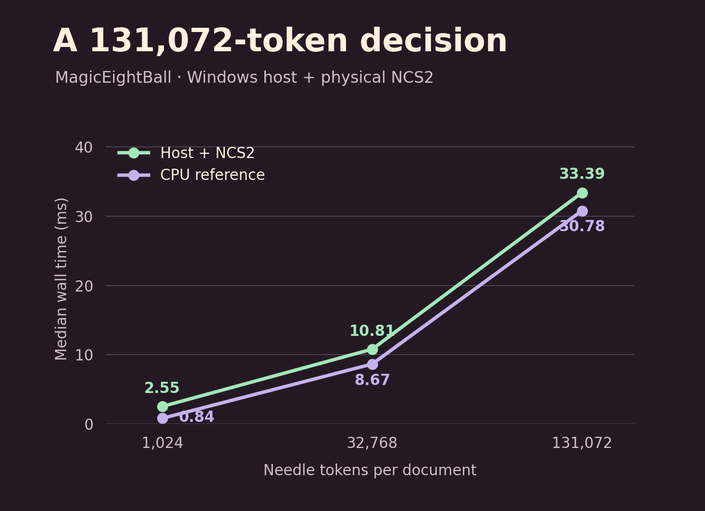
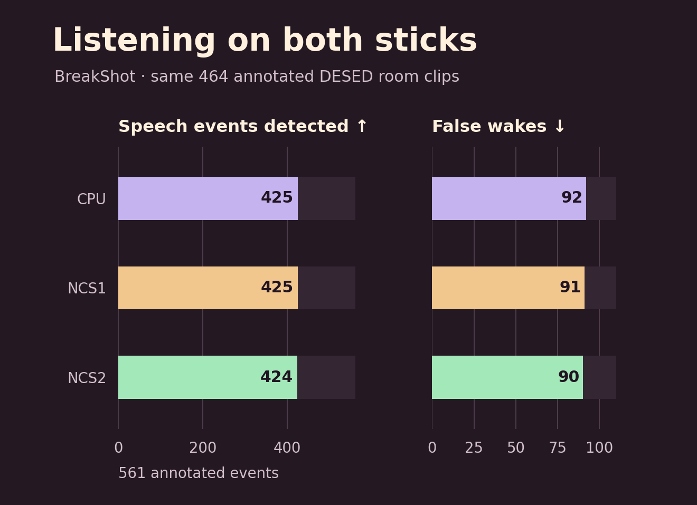
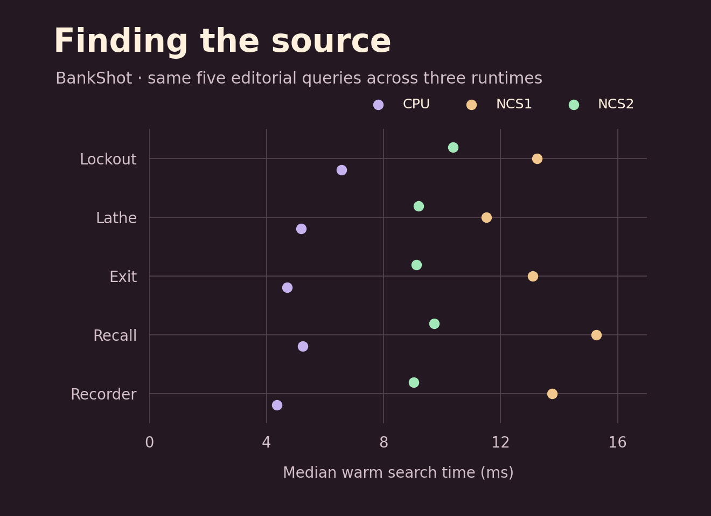

Intel stick benchmarks
Rack Lab workloads replayed on physical Intel Neural Compute Sticks. Every result identifies the stage that ran on the device and the work the host handled.
Intel NCS1Myriad 2 · OpenVINO 2020.3.2
Intel NCS2Myriad X · OpenVINO 2022.3.1
What ran on each stick
| Workload | NCS1 | NCS2 |
|---|---|---|
| MagicEightBall Boolean decisions | 27/27 industry cases and 384/384 assignments, including late-veto tests at 131,072 tokens. | 27/27 industry cases and 384/384 assignments. Also passed seven exact 131,072-token support cases. |
| BreakShot Speech detection | 425/561 speech events, 91 false wakes | 424/561 speech events, 90 false wakes. Both learned stages on device. |
| RailShot Stream recovery | 10/10 physical restart checks | 10/10 with an experimental NCS2 adapter. SQLite and tokenization on host. |
| BankShot Source search | 4/5 target references returned | 4/5 on the same catalog with an experimental adapter. The lathe reference was missed on both sticks. |
| CueBall Text to speech | Full and student v0.3 rendered all ten prompts | Both variants compiled. Device I/O errors prevented all ten prompts per variant from completing, including on a single-stream retry. |
MagicEightBall scans and tokenizes text on the host before its device call. BreakShot uses host-side audio framing. BankShot uses a host catalog and feature extraction.
Measured results



Full MyriadForge pilot suite
All five pilots completed on Windows. Four used the physical NCS2 for their device stage.
- MobileNetV2 gate22.63 ms warm median, 50 timed inferences
- kNN37.0 queries/sec, 100,000-vector table, 32 queries per batch
- Cascade22.7 ms NCS2 gate. Host captioning requires Mirage.
- Footage19 events from 20 sampled frames
- Podcast51 energy-gate events across 66 windows on CPU